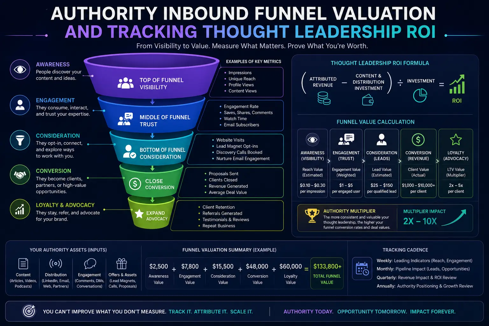
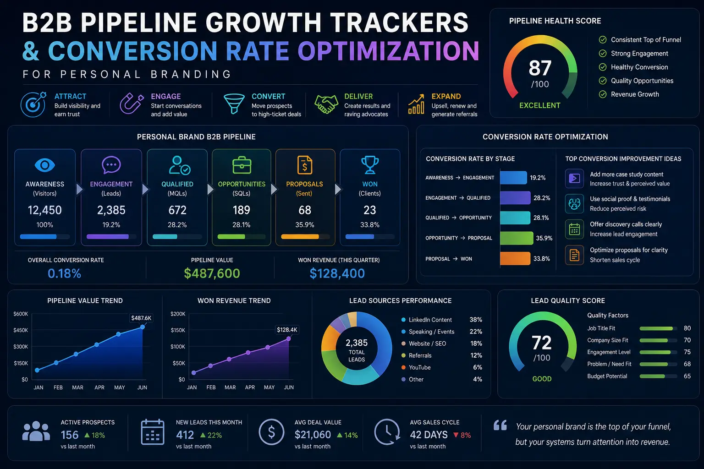

The Four Inbound Metrics that Prove Your Personal Brand Value is Actively Scaling
Introduction: The Shift from Vanity Metrics to Enterprise Value
In the rapidly evolving digital economy of July 2026, personal branding has transformed from a speculative vanity exercise into a core driver of corporate enterprise value. Founders, CEOs, and corporate executives are no longer asking if they should build a public profile; instead, they are searching for scientific ways of Measuring personal brand impact. The era of relying on surface-level engagement indicators like LinkedIn likes, impressions, and viral comments is over. To justify the substantial investment of time and capital, business leaders must implement structured Personal Branding Metrics that connect their public-facing activities directly to the balance sheet. Without a systematic approach to Tracking Thought Leadership ROI, content creation remains a speculative expense rather than a predictable revenue generator.
This shift in perspective is driven by the reality that modern B2B buyers do not make decisions in a vacuum. Before engaging with a sales team, prospects consume content, verify executive profiles, and assess the domain expertise of a company’s leadership. When a founder builds authority, they establish trust at scale, turning their name into a customer acquisition channel. To measure this transition from passive visibility to commercial influence, organizations need a framework for Authority Inbound Funnel Valuation. By analyzing how executive visibility drives high-quality inbound opportunities, companies can treat personal branding as a core asset. In this guide, we will explore the four inbound metrics that prove your personal brand value is actively scaling, helping you transition from subjective vanity tracking to objective, revenue-driven growth.
Furthermore, the transition to quantitative tracking allows marketing teams to align executive activities with broader corporate campaigns. Rather than treating the founder's social media as an isolated silo, integrating these efforts into the main marketing stack yields rich data. By tracking the direct correlation between thought leadership output and pipeline volume, companies can make informed, data-driven scaling decisions. This integration is essential for establishing a reliable thought leadership valuation baseline.
In today's landscape, building an authoritative presence is synonymous with building trust-equity. Trust-equity acts as a buffer against market volatility and price-cutting competitors. When buyers perceive you as an industry guide, your services or products command a premium. However, scaling this authority is impossible without hard statistics to back it up. By adopting sophisticated analytical methodologies, you can transform your personal brand from an artistic endeavor into an engineered growth engine that constantly feeds your sales pipeline with highly qualified opportunities.
Metric 1: Branded Search Queries – The Direct Reflection of Industry Authority
The first and most direct indicator that your personal brand is scaling is the rise in branded search queries. Specifically, tracking Google search volume for your name provides a raw, unfiltered look at your industry resonance. When someone hears you on a podcast, reads your article, or sees your social media post and immediately opens Google to search for your name, they are demonstrating high-intent interest. Unlike social media impressions, which can be artificially inflated by viral, non-business content, branded search queries represent active curiosity and intent.
To begin tracking this, leaders can use tools like Google Search Console, Google Trends, and Semrush to monitor historical trends in name queries. If your branding campaigns are successful, you will observe a steady upward trajectory in these queries. This metric is a foundational component of Personal Branding Metrics because it captures word-of-mouth referrals and offline interactions that social platforms cannot track. For instance, if an executive speaks at a major conference, a spike in searches for their name over the following week is a clear confirmation of impact.
To conduct a thorough branded search audit, organizations should analyze the search queries quarterly. It is important to distinguish between search queries for your name in isolation and those combined with your industry or company name. For example, search queries like "Your Name SEO strategy" or "Your Name consulting" show that searchers already associate your name with a specific service. This qualitative shift in how people search is a key leading indicator of thought leadership valuation, showing that you are successfully positioning yourself as a category-of-one authority.
Moreover, analyzing this data allows you to assess the quality of your audience. High-intent branded searchers are significantly more likely to convert into clients, partners, or talent prospects. When you align these search insights with other B2B pipeline growth trackers, you can see how branded search volume feeds the top of your marketing funnel. Establishing this baseline is crucial for Measuring personal brand impact, as it proves that your brand exists in the minds of your target audience, not just on platform dashboards. By consistently tracking the Google search volume for your name, you can quantitatively show that your authority building efforts are translating into direct market interest.
In addition to tracking numbers, you should look at the secondary terms associated with your name. A search profile that shifts from "Founder Name company" to "Founder Name framework" or "Founder Name advice" indicates that your conceptual frameworks are beginning to dominate industry discourse. This means your personal brand is not just representing your business, but actually shaping the terminology of your market, providing long-term brand equity that survives platform algorithm updates.
Metric 2: Authority Inbound Funnel – Quantifying Content-Generated Pipeline
The second metric is the valuation of your authority inbound funnel. Traditional inbound leads are often cold or semi-warm, requiring extensive nurture cycles. However, leads generated through a founder’s personal brand are unique: they enter the sales process with built-in trust. This creates a distinct opportunity for Authority Inbound Funnel Valuation, where you quantify the economic value of leads that cite the founder's content as their primary discovery source.
To measure this, you must implement self-reported attribution on your contact forms (e.g., a "How did you hear about us?" field where users can type their answer). When prospects write "read the CEO's LinkedIn posts" or "saw the founder's video on YouTube," these leads are tagged as authority-driven. By tracking the close rate, contract value, and sales cycle length of these specific leads, you can calculate the exact monetary value of the pipeline generated by your personal brand.
This process is critical for thought leadership valuation. When you compare the client acquisition cost (CAC) of authority-driven leads against traditional paid ads or cold outreach, you typically find that authority leads have a higher lifetime value (LTV) and lower CAC. This comparison is at the heart of Tracking Thought Leadership ROI, as it demonstrates how a strong personal brand reduces dependency on expensive ad campaigns and outbound outreach.
By quantifying the authority inbound funnel, you also gain valuable insights into content performance. You can identify which topics, formats, and channels drive the highest-value opportunities. For instance, a founder might write ten posts on general business advice that generate high engagement, but a single deep-dive article on a technical industry challenge might be the source of three major enterprise contracts. Without a framework for Authority Inbound Funnel Valuation, these high-value interactions are lost in aggregate data, leading to misallocated marketing resources.
To build a sustainable authority inbound funnel, leaders should focus on creating a structured content library. This library should include deep-dive whitepapers, long-form articles, and video case studies that address the exact pain points of your target clients. As this content asset library grows, it acts as a permanent search engine and social media resource that continues to capture and nurture leads, further strengthening your overall Personal Branding Metrics. This library is crucial for long-term thought leadership valuation and pipeline predictability.
A well-structured inbound funnel will display distinct dynamics compared to standard marketing channels. For example, authority leads often bypass initial entry-level discovery calls, demanding to speak directly to senior consultants because they feel they already understand your methodology. This reduces internal sales friction, frees up your business development representatives, and allows your senior consultants to focus on closing high-value accounts. The authority inbound funnel is therefore not just a lead generation tool, but an organizational efficiency tool.
Predictable Pipeline Growth
By implementing structured Personal Branding Metrics, organizations can predict the flow of high-intent inbound leads based on executive content publishing schedules.
Lower Acquisition Cost
Leads originating from authority-driven channels close faster and require less sales nurturing, significantly reducing overall CAC.
Enhanced Deal Sizes
Prospects who trust a founder's expertise before buying are less price-sensitive, leading to larger deal sizes and higher contract values.
Data-Driven Strategy
Measuring personal brand impact helps identify which content themes and platforms resonate most with decision-makers, optimizing production efforts.

Metric 3: The Velocity Shift – How Personal Brands Accelerate Sales Cycles
The third metric focuses on how a strong personal brand accelerates sales cycles, particularly when analyzing outbound lead velocity. In B2B sales, outbound outreach is notorious for slow response times and long deal cycles. However, when your sales reps conduct outreach while pointing to a founder’s active, authoritative presence, the response dynamics change.
By analyzing outbound lead velocity, companies can measure the time it takes for an outbound lead to move from first contact to a closed-won opportunity. When the outbound target can search Google, find the founder's thought leadership, and read high-value insights, their skepticism dissolves. The sales team doesn't need to spend the first three calls proving the company's credibility; the founder's brand has already done that work.
Therefore, tracking the velocity difference between prospects who engage with founder content and those who do not is a key aspect of Tracking Thought Leadership ROI. If prospects exposed to the founder's content close 30% faster, the time saved directly translates to increased sales capacity and higher revenue. This velocity shift is a powerful validation of your brand's commercial utility, proving that authority content acts as a lubricant for the entire sales engine.
Furthermore, analyzing lead velocity allows you to optimize your sales enablement strategy. Sales reps can actively share the founder's recent articles or videos during the sales process to overcome specific objections or re-engage stalled leads. This integration of marketing content and sales outreach is a critical component of Measuring personal brand impact on the bottom line. By showing that personal branding directly shortens the sales cycle, you can justify greater investment in content production and distribution.
To maximize this velocity, the sales enablement team must be trained on how to weave the founder's content into their outbound messaging. Instead of sending generic cold emails, sales representatives can lead with: "I saw you were facing [Challenge], and our founder recently published a breakdown of how we solved this for [Client]—here is the link." This approach leverages the built-in credibility of the founder to instantly build rapport. When analyzing outbound lead velocity, companies that utilize this methodology routinely see a dramatic reduction in response times and sales friction, proving the direct value of Tracking Thought Leadership ROI.
Additionally, a faster sales cycle means that your team spends less time chasing unresponsive leads. By qualifying prospects early through their interaction with your founder-led content, your sales pipeline remains clean and focused on high-probability opportunities. When you combine this with B2B pipeline growth trackers, you can create a highly efficient sales ecosystem where marketing and sales work in perfect synchrony to drive business growth.
Metric 4: Assisted Conversions and Pipeline Growth – The Ultimate Revenue Anchors
The fourth metric involves tracking assisted conversions and total pipeline impact. Not all prospects will convert immediately after reading a single article. In complex B2B sales, the buyer's journey is non-linear. A prospect might see a post on LinkedIn, search for the founder on Google, read a case study, receive an outbound email, and finally request a demo. In this scenario, traditional first-touch or last-touch attribution models will fail to capture the personal brand's influence.
To solve this, organizations must utilize B2B pipeline growth trackers that account for multi-touch attribution and assisted conversions. By tracking every touchpoint a prospect has with your executive content, you can see how personal branding supports deals throughout the funnel. If a prospect is in the middle of a negotiation and views a founder's video on a niche industry topic, that view assists the conversion.
To make this data actionable, marketing teams should create conversion rate optimization visuals that map the customer journey, showing how thought leadership touchpoints intersect with the standard sales funnel. These visuals help identify friction points and highlight which content assets are most effective at moving prospects from one stage to the next. By treating your personal brand as an integrated component of your overall marketing mix, you establish a more accurate thought leadership valuation and ensure that your brand scaling efforts are aligned with corporate revenue goals.
Additionally, tracking assisted conversions helps identify "invisible" pipeline growth. Many prospects consume a founder's content for months without ever engaging on social media or filling out a form. However, when they finally reach out, they are already pre-sold on the company's methodology. These "dark social" conversions are highly valuable but difficult to track without advanced B2B pipeline growth trackers. By capturing assisted conversions, you can reveal this hidden pipeline and prove the long-term value of your branding efforts.
Another important indicator within assisted conversions is the tracking of micro-conversions. These include newsletter signups, webinar registrations, or whitepaper downloads initiated through the founder's personal profiles. While these micro-conversions may not represent immediate sales revenue, they expand your nurture database with highly qualified contacts. Tracking how many of these micro-leads eventually transition into paying customers is essential for defining the long-term thought leadership valuation of your brand building programs. Integrating these elements with high-impact conversion rate optimization visuals allows you to optimize every touchpoint.
By creating a map of assisted conversions, you can pinpoint the exact stage where founder content is most influential. Does it help create initial interest, or is it more powerful at the bottom of the funnel when clients are comparing you to competitors? Understanding this role helps you tailor your content calendar to support specific sales goals, whether you need to fill the top of the funnel or help the sales team close outstanding proposals.
LinkedIn Authority
- Focus: Industry insights, case study breakdowns, and personal leadership stories.
- Primary Metric: Direct inbound inquiries and profile views from target accounts.
- Role in Funnel: Top-of-funnel awareness, connection building, and mid-funnel nurture.
Organic Search & SEO
- Focus: Deep-dive articles addressing specific, high-intent industry problems.
- Primary Metric: Google search volume for your name and organic blog traffic.
- Role in Funnel: Nurturing high-intent searchers and capturing passive buyers.
Video & Multimedia
- Focus: Founder interviews, product walk-throughs, and video podcasts.
- Primary Metric: Average watch time and assisted conversions from video platforms.
- Role in Funnel: Accelerating sales velocity and building deep trust.

Deep Dive: How to Setup Your Personal Branding Analytics Dashboard
To successfully monitor these four metrics, organizations must build a dedicated personal branding analytics dashboard. This dashboard should integrate data from search engines, social media platforms, CRM software, and web analytics tools to provide a unified view of your branding performance. It acts as one of your primary B2B pipeline growth trackers, ensuring that you have complete visibility over your marketing investments.
The first step in setting up this dashboard is configuring your web analytics to track branded search. By setting up custom reports in Google Search Console, you can isolate queries containing the founder's name and track their search volume, click-through rates, and average positions over time. This data provides the baseline for tracking Google search volume for your name and measuring organic brand awareness.
Next, you must integrate your CRM with your self-reported attribution data. When a lead enters the CRM, their attribution source should be automatically updated based on their form response. This allows you to run reports on the close rates, contract values, and sales velocity of authority-driven leads, establishing a clear link between personal branding and revenue. This is a critical step for Authority Inbound Funnel Valuation and thought leadership valuation.
Finally, you should track assisted conversions using multi-touch attribution models in your web analytics platform. By tracking the content pages visited by prospects before they convert, you can see how founder articles and videos assist in the conversion process. This data can be visualized using conversion rate optimization visuals to help your team optimize the user experience and drive higher conversion rates. Having clear conversion rate optimization visuals ensures that your design and content production teams know exactly what changes are driving results.
As you build this dashboard, ensure that the data is updated automatically to prevent manual errors. Regularly reviewing these dashboards during weekly growth meetings helps align your executive content schedule with corporate marketing initiatives. When everyone in the organization sees how a single founder-led article directly impacts pipeline value, it creates a unified culture of content creation and sharing.
Synthesizing Personal Branding Analytics: How to Build a Predictable Growth Engine
By combining these four metrics—branded search volume, authority inbound funnel value, sales velocity changes, and assisted conversions—companies can build a comprehensive dashboard for Measuring personal brand impact. This dashboard moves the conversation away from vanity metrics and focuses on the real driver of B2B success: revenue. Establishing a structured approach to thought leadership valuation is the only way to scale with confidence.
Implementing these trackers requires a commitment to data integrity and tool integration. Your CRM, marketing automation platforms, and web analytics tools must be configured to capture and attribute authority-driven touchpoints. When this is done correctly, thought leadership valuation becomes a science, allowing you to scale your content production, public relations, and social media campaigns with confidence.
Ultimately, your personal brand is a business asset that appreciates over time. Unlike paid acquisition channels that stop delivering leads the moment you turn off the budget, the trust and authority you build through personal branding continues to yield dividends for years. By measuring and analyzing these key indicators, you can treat your personal brand with the same rigor as any other marketing department, transforming visibility into a predictable, scalable growth engine.
At The PhD Ads in Madurai, we specialize in helping founders and business leaders implement Personal Branding Metrics, Tracking Thought Leadership ROI, Authority Inbound Funnel Valuation, and B2B pipeline growth trackers to turn their public profiles into predictable revenue drivers. Through structured authority positioning, high-impact content creation, and data-driven analytics, we ensure your personal brand value actively scales alongside your business.
Key Topics
Ready to Track and Scale Your Personal Brand Value?
At The PhD Ads in Madurai, we specialize in helping founders and business leaders implement Personal Branding Metrics, Tracking Thought Leadership ROI, Authority Inbound Funnel Valuation, and B2B pipeline growth trackers to turn public profiles into predictable revenue drivers.
Email: team@e2o.in